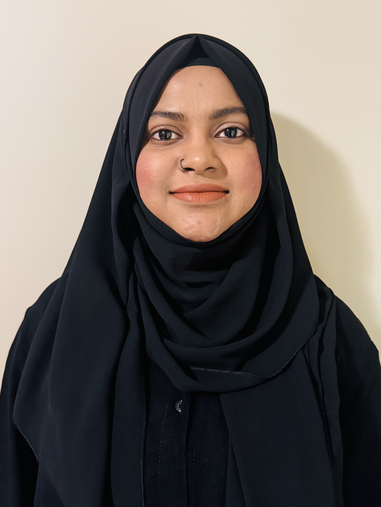

MomFlow
A wellness application designed to support new mothers through health tracking and personalized resources.
Software Engineer | Web Developer | UI/UX Designer

I am a Software Engineer currently pursuing a Master's degree in Software Engineering. I have experience in web development, UI/UX design and WordPress development.
My goal is to become a professional Full-Stack Developer and Cyber Security specialist while creating secure, user-friendly web applications.
| Qualification | Institution | Status |
|---|---|---|
| MSc Cyber Security Management | University of Staffordshire | Current |
| Post Graduate Diploma in Digital Design & Development (Web) | North Island College | Completed |
| BSc Software Engineering | University | Completed |
A wellness application designed to support new mothers through health tracking and personalized resources.
A community food-sharing platform developed using FlutterFlow and Firebase.
Redesigned and maintained the company website using WordPress, improving usability and online presence.
Black Creek Industries Ltd.
2024 – 2026
Email: naz4rinaz@gmail.com
GitHub: https://github.com/nazrinzuwair
Portfolio: https://nazrinzuwair.com